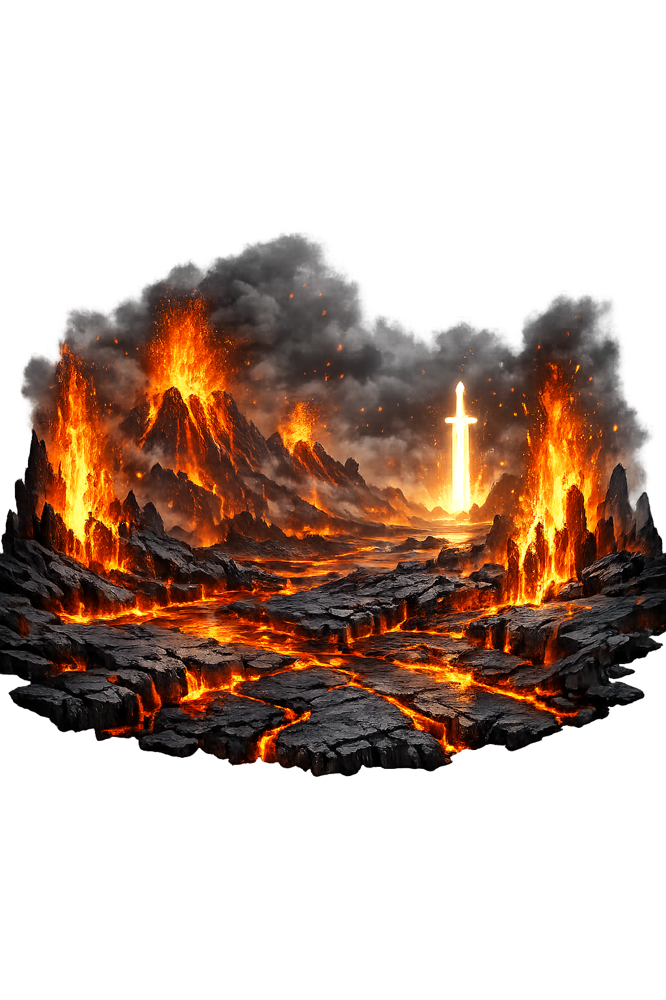

Ancient Domain
In the norse tradition, Muspellheimr governed world of fire. The name encodes a sphere of power that shaped ritual, narrative, and social order.
Extended Lore
Etymology · Phonology · Orthography · Cultural Legacy · Primary Sources

Essential information about Muspellheimr, World of Fire
From original script to Unicode restoration
Muspellheimr is Tier 2: no vowel is marked long or stressed. The first element Muspell is not a native transparent compound; its prehistory is debated, which is why the pronunciation stays conservative and the etymology is not invented.
Character-by-character philological analysis
| Character | Unicode | Name | Block | Phonetic Role |
|---|---|---|---|---|
| M | U+004D | Latin Capital Letter M | Basic Latin | Same, capitalized |
| u | U+0075 | Latin Small Letter U | Basic Latin | Same |
| s | U+0073 | Latin Small Letter S | Basic Latin | Same |
| p | U+0070 | Latin Small Letter P | Basic Latin | Same |
| e | U+0065 | Latin Small Letter E | Basic Latin | Same |
| l | U+006C | Latin Small Letter L | Basic Latin | Same |
| l | U+006C | Latin Small Letter L | Basic Latin | Same |
| h | U+0068 | Latin Small Letter H | Basic Latin | Same |
| e | U+0065 | Latin Small Letter E | Basic Latin | Same |
| i | U+0069 | Latin Small Letter I | Basic Latin | Same |
| m | U+006D | Latin Small Letter M | Basic Latin | Same |
| r | U+0072 | Latin Small Letter R | Basic Latin | Same |
The Tier 2 classification reflects how much of the original phonology this restoration preserves — stress and vowel length for Greek names, distinctive letters and diacritics for every other tradition.
From ancient cult to modern Unicode
In the norse tradition, Muspellheimr governed world of fire. The name encodes a sphere of power that shaped ritual, narrative, and social order.
Norse tradition absorbed and reworked Germanic, Celtic, and Christian influences; medieval Icelandic compilers preserved the myths while Christian frameworks shaped their presentation.
The name lives on in modern fantasy, Neopagan practice, Scandinavian heritage, and the global reception of Viking-Age literature. Restoring Muspellheimr in Unicode preserves the name's cultural specificity against the flattening force of plain ASCII. Muspell's fire resonates in apocalyptic imagination, volcanic disaster narratives, and climate change discourse. The Old Norse form Muspellheimr preserves a medieval intuition that creation and destruction are fueled by the same primordial heat.
Restoring Muspellheimr in a domain name is more than orthographic accuracy. It is a statement that the internet should recognize the full range of human writing — not only the ASCII keyboard.
Common questions about Muspellheimr, World of Fire, and Unicode restoration
In reconstructed pronunciation, Muspellheimr is /ˈmus.pelˌhɛi̯mr/ — approximately 'MOOS-pel-haymr' — stress the first syllable, keep the vowels short, and glide through the final 'haymer'..
Muspellheimr means Muspel-home (world-ender) in the norse tradition.
Muspellheimr is associated with Surtr's flaming sword (The giant's bright blade that burns the world at Ragnarǫk), Lava field (The volcanic landscape of Iceland that medieval Norse readers imagined as Muspell), Spark-shower (The fire that flies from Muspellheimr to kindle sun, moon, and stars), Fire-giant's crown (Surtr as the ruler of the flaming realm, sometimes shown with a crown of flames), World-ash blackened (The burned Yggdrasil after the fire of Muspell has passed).
Plain ASCII muspellheimr strips the stress, length, and script that make the name specific. Unicode restoration returns the name to its original written dignity.
The seeress of Völuspá foretells that Surtr will come from the south with fire, his sword brighter than the sun. The bridge Bifröst breaks beneath the tread of Muspell's sons; the fire giant slays the beautiful god Freyr, who gave away his own sword for love. The flames spread until heaven itself is consumed.This is Muspellheimr's decisive mythic appearance: not as a realm to be visited but as a force that arrives at the end of time. Its fire does not discriminate; it burns gods, giants, and the world-tree alike, making Muspellheimr the agent of universal dissolution.
The philological foundations of this restoration
Every claim on this page is grounded in established scholarship. The orthographic restorations follow disciplinary convention. The etymological chain follows the best available reference works. This is not invention — it is resurrection through scholarship.
You have traced the name from its earliest attestation to its Unicode restoration. Now return to the myth. The story is where the name lives.
Back to Lore